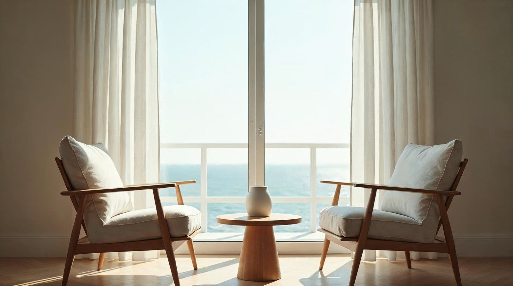
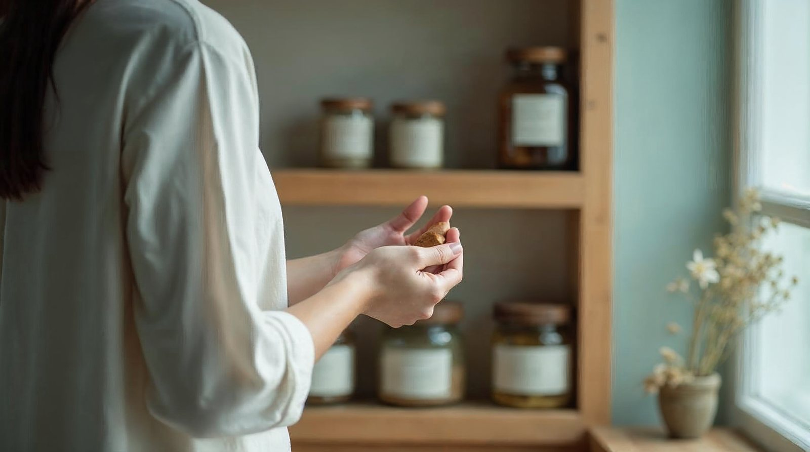
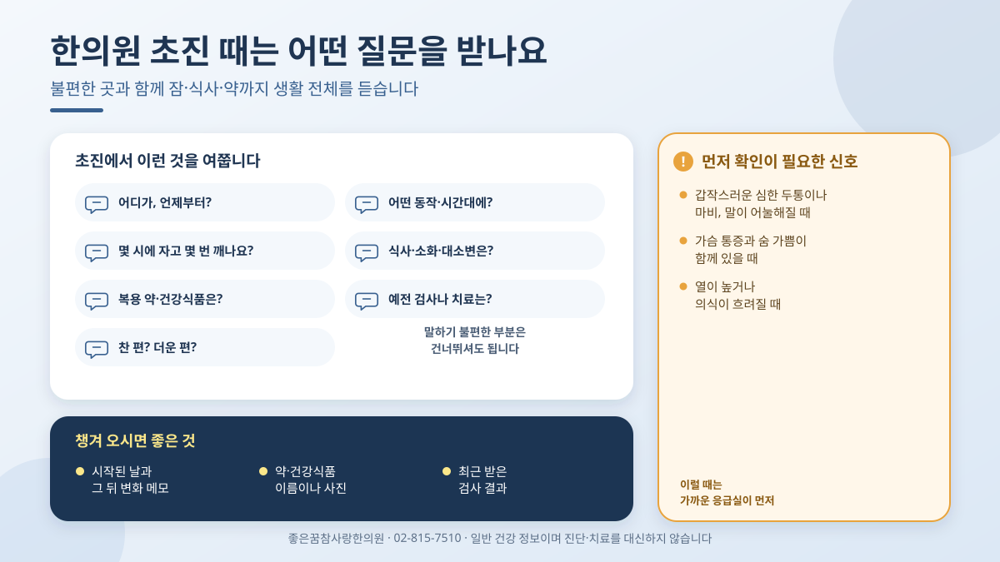

이종호 한의사 감수좋은꿈참사랑한의원 대표원장 (한의사 면허번호 19769)발행 2026-11-23 · 수정 2026-11-26
이 글의 차례
초진에서는 어디가 언제부터 불편했는지와 함께 잠, 식사, 대소변, 몸의 온기, 복용 중인 약까지 하루 전체를 여쭙습니다. 그리고 처음 오신 분도 모두 맥부터 짚습니다. 아픈 곳 하나만 들어서는 놓치기 쉬운 몸의 사정을 함께 듣고 싶어서입니다.
점심시간을 쪼개 오셨거나, 퇴근길에 겨우 예약 시간을 맞춰 오신 분이 진료실 의자에 앉으십니다. 저는 먼저 양손을 올려 달라고 말씀드리고, 맥을 짚으면서 이야기를 시작합니다. 어깨가 아파서 오셨는데 첫 질문이 요즘 잠은 어떠시냐는 것일 때도 있습니다.
처음 오신 분들은 "허리가 아파서 왔는데 왜 이런 걸 물어보시나" 하고 의아해하시기도 합니다. 그 마음을 압니다. 그래서 제가 첫날 무엇을 왜 여쭙는지, 대답이 막힐 때는 어떻게 하시면 되는지 차근차근 적어 두려고 합니다.
왜 증상 말고도 여러 가지를 여쭐까요
진료실에서 제가 지키고 싶은 다짐이 하나 있습니다. "병만 바라보는 의사가 아니라, 병으로 고통받는 사람을 바라보는 의사가 되겠습니다." 질문이 많아지는 것은 이 다짐 때문입니다.
몸은 따로따로 움직이지 않습니다. 잠을 못 자면 같은 통증도 더 크게 느끼고, 긴장이 풀리지 않으면 소화도 무거워집니다. 그 연결을 함께 보아야 지금 이분께 필요한 치료가 보입니다.
같은 허리 통증이어도 누군가는 하루 종일 앉아서 일해야 하고, 누군가는 밤마다 잠을 설치며, 누군가는 아픈 몸으로 가족을 돌봐야 합니다. 통증의 이름은 같아도 그 통증이 이어지는 하루는 사람마다 다릅니다.
그래서 진료할 때마다 아픈 곳과 함께 네 가지를 살핍니다. 몸의 온기, 소화, 잠, 그리고 대소변입니다. 검사 수치로 다 드러나지 않을 때가 많지만, 몸이 지금 어떤 리듬으로 지내는지 알려 주는 단서가 됩니다.
몸의 온기는 추위와 더위를 어떻게 느끼시는지, 손발이 찬지, 얼굴로 열이 오르는지로 여쭙습니다. 소화는 입맛이 있는지, 먹고 나서 편안한지를 봅니다. 잠은 쉽게 드는지, 자다가 깨지 않는지, 일어날 때 개운한지를 여쭙고, 대소변은 편안한지를 봅니다.
약과 지병을 여쭙는 데는 이유가 하나 더 있습니다. 안전입니다. 혈액을 묽게 하는 약을 드시는지, 당뇨나 간·신장 질환이 있는지, 임신 가능성이 있는지 알아야 침이나 약침, 한약 같은 방법을 조심스럽게 고를 수 있습니다.
처음에 충분히 들어 두면 다음이 편해집니다. 다시 오셨을 때 처음부터 설명하지 않으셔도 되도록, 오늘 들은 이야기를 기록해 두었다가 지난번 이야기에 이어서 여쭙습니다.
어깨가 아파 오신 분께 잠을 여쭙는 까닭
허리나 어깨가 아파 오신 분께 요즘 잠은 어떠시냐고 여쭤보면, 아파서 자다가 깬다는 분도 원래 잠을 잘 못 잔다는 분도 계십니다. 잠이 부족하면 같은 통증도 더 크게 느껴지고 몸이 회복할 시간도 줄어듭니다. 아파서 못 자고, 못 자서 더 아픈 고리가 생기는 것이지요.
어깨가 주기적으로 아프고, 많이 아플 때는 그 부위가 뜨겁다고 느끼시는 분들이 있습니다. 저는 이럴 때 양손을 올려 봐 달라고 말씀드리고 잠 이야기를 꺼냅니다. 자다가 깨시는지, 어떻게 주무셨느냐에 따라 다음 날 몸이 다른지 여쭙니다.
그렇게 이야기를 이어 가다 보면, 뜨거운 느낌은 늘 있는 게 아니라 통증이 심할 때만 든다는 말씀이 나오기도 합니다. 지금도 열감이 있다는 뜻으로 받아들였다면 놓쳤을 차이입니다.
제가 차트에 '어깨 통증, 열감'만 남겨 두면, 정작 그분이 아는 몸의 사정 하나가 사라집니다. 그래서 잠에서 깬 뒤 어깨가 아픈지, 어깨가 아파서 잠이 깨는지도 여쭙니다. 겉보기에는 비슷한 두 문장이지만 밤에 겪는 일은 다릅니다.
이런 이야기는 대개 손목을 짚는 동안 나옵니다. 저는 맥을 보다가도 혀를 한번 보여 달라고 하고, 식사는 어떤지, 속은 편한지, 대변은 어떤지 여쭙습니다. 맥을 짚고 떠올린 생각에는 대답에 따라 고쳐야 할 여지가 늘 남아 있습니다.
그래서 "그건 아닌데요"라는 말씀이 나오면 저는 거기서부터 다시 듣습니다. 자기 몸에서 언제 무슨 일이 일어나는지 가장 오래 지켜본 분은 제 앞에 앉은 그분이기 때문입니다.
맥을 짚으면서도 계속 여쭙는 이유
양손을 다 내어 달라고 하는 데도 까닭이 있습니다. 손목의 세 자리를 양쪽 모두 짚어, 한 자리만 보지 않고 여섯 자리 전체의 흐름과 좌우 차이를 먼저 봅니다. 손끝이 아니라 손가락 면으로 가볍게 짚으니 긴장하지 않으셔도 됩니다.
그래도 맥 하나로 결론을 내리지는 않습니다. 저는 맥을 이렇게 설명하곤 합니다. "맥은 그림자입니다. 실체가 아니라, 지금 몸이 어떻게 버티고 있는지 비춰 주는 그림자를 느끼는 것입니다."
그림자만 보고 모양을 단정할 수는 없으니, 혀를 보고 배를 살피고 손발이 찬지 여쭙습니다. 같은 맥이라도 손발이 따뜻한 분과 찬 분은 치료 방향이 다릅니다. 몸이 찬 편인지 더운 편인지 묻는 질문도 여기서 나옵니다.
맥이 나쁘다는 말을 들을까 봐 걱정하실 필요도 없습니다. "사람마다 맥에 좋고 나쁨이 있는 게 아닙니다. 얼굴 생김새처럼 다 다를 뿐입니다." 제가 살피는 것은 맥의 좋고 나쁨보다, 그 맥이 지금 이분의 하루와 어떻게 이어져 있는지입니다.
그래서 맥을 짚는 동안에도 말씀은 멈추지 않으셔도 됩니다. 저는 이렇게 말하곤 합니다. "진료실에서는 둘이 아니라 셋이 이야기합니다. 환자분, 환자분의 맥, 그리고 저."

먼저 이렇게 여쭙니다
첫날 제가 여쭙는 것은 대략 이렇습니다. 순서대로 대답하지 않으셔도 되고, 기억나지 않는 것은 모르겠다고 하셔도 괜찮습니다.
- 어디가 불편하고 언제부터 시작되었나요?
- 어떤 동작이나 시간대에 더 심해지나요?
- 잠은 몇 시에 자고, 몇 번 깨나요?
- 식사 시간과 소화, 대소변은 어떤가요?
- 복용 중인 약이나 건강식품이 있나요?
- 예전에 받은 검사나 치료가 있나요?
- 평소 몸이 찬 편인가요, 더운 편인가요?
앞의 두 줄은 아픈 곳에 대한 질문이고, 나머지는 하루를 어떻게 지내시는지에 대한 질문입니다. 오시기 전에 이 일곱 줄에 미리 답을 적어 보시면, 그 자체로 내 몸을 한번 점검해 보는 시간이 됩니다.
예를 들어 허리가 아파 오신 직장인이라면, 하루 몇 시간 앉아 계시는지와 함께 몇 시쯤 잠자리에 드시는지를 여쭙게 됩니다. 아픈 때가 아침인지 저녁인지에 따라 살피는 방향이 달라질 수 있어서입니다.
잠을 잘 못 주무신다는 분께는 잠드는 게 어려운지, 자주 깨는지, 새벽에 일찍 깨는지를 나누어 여쭙니다. "잠을 잘 못 자요"라는 한마디 안에도 서로 다른 밤이 들어 있습니다.
식사 뒤 속이 더부룩해 오셨다면 무엇을 드셨는지와 함께, 몇 시에 얼마나 서둘러 드셨는지도 여쭙니다. 밥때가 되면 편하게 먹는 일, 그 평범한 리듬이 어디서 흔들렸는지 찾고 싶어서입니다.
대답이 막힐 때는 이렇게 말씀해 주세요
막상 진료실에 앉으면 머리가 하얘진다는 분이 많습니다. 언제부터였는지 날짜가 떠오르지 않고, 집에서는 그렇게 아프던 곳이 지금은 덜한 것 같기도 합니다. 누구나 그렇습니다.
그럴 때는 날짜 대신 계기를 말씀해 주세요. 이사한 뒤부터, 시험 기간이 시작되고부터, 날이 추워지고부터처럼요. 오래된 불편이라 기억이 흐릿하면 최근 한 주가 어땠는지부터 이야기해 주셔도 충분합니다.
불편이 여러 군데라 무엇부터 말할지 막막하시면, 지금 가장 불편한 것 하나만 먼저 말씀해 주세요. 잠과 소화, 통증이 서로 얽혀 있는 경우가 많아 결국 함께 여쭙게 되지만, 그날은 가장 불편한 것부터 순서를 정해 살핍니다.
말로 설명하기 어려운 불편은 아픈 동작을 직접 해 보여 주셔도 됩니다. 제가 서 보시라고, 걸어 보시라고 부탁드리는 이유이기도 합니다. 손가락으로 아픈 자리를 짚어 주시면 제가 짐작한 자리와 같은지 다시 확인합니다.
침이 무서우시다면 그것도 첫날 말씀해 주세요. 무서운 마음을 숨기고 참으시는 것보다 미리 알려 주시는 편이 저에게는 훨씬 도움이 됩니다.
말씀하기 불편한 이야기는 건너뛰셔도 괜찮습니다. 필요하다고 느끼시는 만큼만 들려주세요. 마음이 힘든 이야기는 첫날이 아니어도 되고, 몇 번 뵙고 나서 꺼내셔도 늦지 않습니다.
검사 결과를 가져오셔도 다시 여쭙는 까닭
다른 병원에서 찍은 사진이나 검사 결과를 가져오시면 함께 보며 지금 상태를 이해하는 데 참고합니다. 그런데 결과지를 보고 나서도 저는 다시 여쭙습니다.
영상에 보이는 소견과 실제로 느끼는 통증이 늘 일치하지는 않기 때문입니다. 사진을 찍었더니 무릎이 닳아 있다는 말을 들은 분이 많은데, 사진에 보이는 모습과 아픈 정도가 꼭 같지는 않습니다.
그래서 결과지만 보고 치료를 정하지 않습니다. 언제, 어떤 자세에서 아픈지, 저림이 다리로 내려가는지, 힘이 빠지지는 않는지, 일상생활이 얼마나 불편한지를 함께 듣습니다. 결과지는 이야기를 대신하지 않고, 이야기를 거들어 줍니다.
일상에서 먼저 해 볼 수 있는 것
- 오기 전 며칠 동안 잠든 시각과 깬 횟수를 한 줄씩 적어 보기
- 하루 중 가장 불편한 시간대와 동작을 하나만 골라 두기
- 드시는 약과 건강식품은 봉투나 이름을 사진으로 찍어 두기
- 진료 시간보다 조금 일찍 도착해 숨을 고르기
일찍 오시라는 말씀은 서두르시라는 뜻이 아닙니다. 걸어오신 직후나 식사 직후에는 맥이 평소와 달라질 수 있습니다. 급하게 오셨다면 잠시 쉬었다가 맥을 짚겠습니다.
옛 책 『내경』은 하루 중 몸이 가장 고요한 이른 아침을 진맥하기 가장 좋은 때로 보았습니다. 진료 시간을 그렇게 맞추실 필요는 없습니다. 의자에 앉아 숨을 고르는 몇 분이면 충분합니다.

질문이 끝난 뒤
맥을 짚으며 이야기를 들은 다음에는, 필요하다고 판단될 때 혀를 보는 설진이나 배를 살피는 복진을 더하고 서고 걷고 앉는 동작을 확인합니다. 근육이나 힘줄을 눈으로 확인할 필요가 있으면 초음파로 살펴봅니다.
그다음 오늘 받을 치료와 그 이유를 먼저 말씀드립니다. 가장 아픈 곳은 원장이 직접 침이나 추나, 체외충격파처럼 그날 필요한 치료를 하고, 그 밖의 불편한 곳은 직원이 자기장·온열·패드형 물리치료로 이어서 살핍니다.
치료 중에 온도나 자세, 자극이 불편하시면 언제든 말씀해 주세요. 아파서 오시는 곳이지만 머무시는 동안만큼은 잘 쉬다 가셨으면 합니다. 치료를 마치면 "시원하세요? 괜찮으세요?" 하고 꼭 여쭙습니다.
귀가 전에는 세 가지를 말씀드리려고 합니다. 오늘 무엇이 제일 불편하셨는지, 제가 무엇을 더 살펴보고 싶은지, 다음번까지 어떤 변화를 눈여겨보시면 좋을지입니다. 맥에 어려운 이름을 붙이고도 이 셋을 전하지 못했다면 제 설명이 아직 덜 된 것입니다.
진맥만으로 모든 것을 알 수는 없습니다. 들은 이야기와 진찰을 함께 놓고 보아 다른 검사나 진료가 필요하다고 판단되면, 그렇게 권해 드립니다.
한의원에서 함께 살필 수 있는 경우
- 불편이 여러 곳에 걸쳐 있어 무엇부터 말해야 할지 막막한 경우 한 가지씩 순서를 잡아 함께 정리합니다.
- 오래된 불편이라 기억이 흐릿한 경우 최근 한 주의 변화부터 함께 짚어 봅니다.
- 말로 설명하기 어려운 불편은 아픈 동작을 직접 해 보시며 함께 확인합니다.
- 아픈 곳과 함께 잠이나 소화까지 흔들리는 경우 몸 전체의 리듬을 함께 살핍니다.
처음 오시면 접수, 진맥과 상담(맥을 짚는 동안에도 여쭙고 듣습니다), 필요하다고 판단될 때의 진찰(설진·복진·초음파 등), 상태에 맞는 치료, 귀가 전 안내 순서로 진행합니다. 다시 오시면 지난번 이야기부터 이어서 여쭙습니다.
초진은 이야기를 듣고 진찰하는 시간이 있어 재진보다 오래 걸릴 수 있습니다. 일정에 여유를 두고 오시면 서두르지 않고 이야기를 나눌 수 있습니다.
이렇게 기록해 오시면 상담이 쉬워집니다
- 불편이 시작된 날과 그 뒤의 변화를 짧게 적은 메모
- 복용 중인 약과 건강식품 이름(사진도 좋습니다)
- 최근 받은 검사 결과나 진단서
- 하루 중 가장 불편한 시간대와 동작
- 예전에 받은 한방 치료나 한약이 있다면 그 경험
- 붓기나 멍처럼 사라질 수 있는 증상은 사진으로 찍어 두기
메모는 길 필요가 없습니다. 진료실에서 말이 막힐 때 꺼내 볼 수 있을 정도면 됩니다. 다만 약 이름만큼은 기억에 기대지 마시고 눈으로 보이게 챙겨 와 주세요. 드시던 약은 임의로 끊지 마세요.
처음 뵙는 날에
살림을 하고, 일을 하고, 누군가를 챙기느라 정작 본인이 밤에 몇 번 깼는지 셀 겨를도 없이 지내는 때가 있습니다. 그러다 어느 날 시간을 내어 진료실에 오십니다. 그 걸음이 쉽지 않았다는 것을 압니다.
어깨가 아프다는 말씀으로 시작해 이런저런 이야기를 나누다 보면, 비로소 요새 잠을 통 못 잤다는 말이 나오기도 합니다. 그럴 때면 이분이 이 몸으로 그동안 참 많은 일을 해 오셨구나 싶습니다.
질문은 저만 드리는 것이 아닙니다. 어떻게 하면 건강해질지 자꾸 물어보세요. 저도 무엇이 궁금하신지는 여쭈어야 압니다.
첫날 모든 것을 다 말씀하지 않으셔도 됩니다. 오늘 가장 불편한 것 하나만 들고 오셔도 충분합니다. 처음 뵙는 날에는 양손부터 올려 달라고 말씀드리고, 요즘 잠은 어떠신지부터 여쭙겠습니다.
이런 증상은 먼저 확인이 필요합니다
- 말이 갑자기 어눌해지거나 얼굴 한쪽이 처지거나 한쪽 팔다리에 힘이 빠지는 경우
- 갑자기 생긴 심한 두통이나 가슴 통증, 숨 가쁨이 있는 경우
이런 신호가 있으면 한의원보다 가까운 병원이나 응급실을 먼저 찾으세요.
함께 읽으면 좋은 글

여쭙는 것
- 어디가 불편하고 언제부터 시작되었나요?
- 어떤 동작이나 시간대에 더 심해지나요?
- 잠은 몇 시에 자고, 몇 번 깨나요?
생활에서 해 볼 것
- 오기 전 며칠 동안 잠든 시각과 깬 횟수를 한 줄씩 적어 보기
- 하루 중 가장 불편한 시간대와 동작을 하나만 골라 두기
- 드시는 약과 건강식품은 봉투나 이름을 사진으로 찍어 두기
한의원에서 함께 살필 것
- 불편이 여러 곳에 걸쳐 있어 무엇부터 말해야 할지 막막한 경우 한 가지씩 순서를 잡…
- 오래된 불편이라 기억이 흐릿한 경우 최근 한 주의 변화부터 함께 짚어 봅니다.
- 말로 설명하기 어려운 불편은 아픈 동작을 직접 해 보시며 함께 확인합니다.
먼저 확인이 필요한 신호
- 말이 갑자기 어눌해지거나 얼굴 한쪽이 처지거나 한쪽 팔다리에 힘이 빠지는 경우
- 갑자기 생긴 심한 두통이나 가슴 통증, 숨 가쁨이 있는 경우
한눈에 보는 표
| 구분 | 핵심 |
|---|---|
| 여쭙는 것 | 어디가 불편하고 언제부터 시작되었나요? 어떤 동작이나 시간대에 더 심해지나요? |
| 생활에서 해 볼 것 | 오기 전 며칠 동안 잠든 시각과 깬 횟수를 한 줄씩 적어 보기 하루 중 가장 불편한 시간대와 동작을 하나만 골라 두기 |
| 한의원에서 함께 살필 것 | 불편이 여러 곳에 걸쳐 있어 무엇부터 말해야 할지 막막한 경우 한 가지씩 순서를 잡아 함께 정리합니다. 오래된 불편이라 기억이 흐릿한 경우 최근 한 주의 변화부터 함께 짚어 봅니다. |
| 먼저 확인이 필요한 신호 | 말이 갑자기 어눌해지거나 얼굴 한쪽이 처지거나 한쪽 팔다리에 힘이 빠지는 경우 갑자기 생긴 심한 두통이나 가슴 통증, 숨 가쁨이 있는 경우 |
자주 묻는 질문
질문이 너무 많지 않나요?
증상 하나로 오셔도 잠, 식사, 생활을 함께 여쭙는 것은 몸 전체의 흐름 속에서 살피기 위해서입니다. 기억나지 않는 것은 모른다고 하셔도 됩니다.
말하기 어려운 이야기도 해야 하나요?
말씀하기 불편한 부분은 건너뛰어도 됩니다. 필요하다고 느끼시는 만큼만 이야기해 주세요.
처음 가는 날도 진맥을 하나요?
네. 처음 오신 분도 다시 오신 분도 모두 맥을 짚습니다. 급하게 오셨다면 잠시 쉬었다가 짚습니다.
준비해 갈 것이 있나요?
복용 중인 약 목록과 받아 둔 검사 결과가 있으면 가져오시길 권합니다. 초진은 재진보다 시간이 더 걸릴 수 있어 여유 있게 오시면 좋습니다.
좋은꿈참사랑한의원은 재진 때 지난번 이야기부터 이어서 여쭙니다. 진료시간과 예약은 오시는 길에서 확인하세요.
어디서 상담받을 수 있나요?
좋은꿈참사랑한의원은 서울 동작구 만양로2길 2 신성빌딩 3층·5층(서울 동작구 상도동, 7호선 상도역 3번 출구 근처)에 있습니다. 한의사 3명(이종호 대표원장, 조영기 수석진료원장, 정원영 진료원장)이 진료합니다. 진료시간은 평일 09:30~20:00(점심 13:00~14:00), 토·일·공휴일 09:30~15:00이며, 방문 전 전화로 확인을 권합니다. 예약은 네이버 예약, 카카오톡 상담, 전화 02-815-7510로 받습니다.
이 글은 일반적인 건강 정보이며 개인의 진단이나 치료를 대신하지 않습니다. 증상이 있거나 복용 중인 약이 있다면 진료를 통해 확인하세요. 치료 효과는 개인마다 다를 수 있습니다.
작성 기준: 일반적으로 알려져 있는 건강 정보를 참고해 정리했습니다(대표원장 감수). 증상 기록은 1~2주 동안 하루 1회, 비슷한 시간에 적어 오시면 지난 상태와 비교하기 쉽습니다.